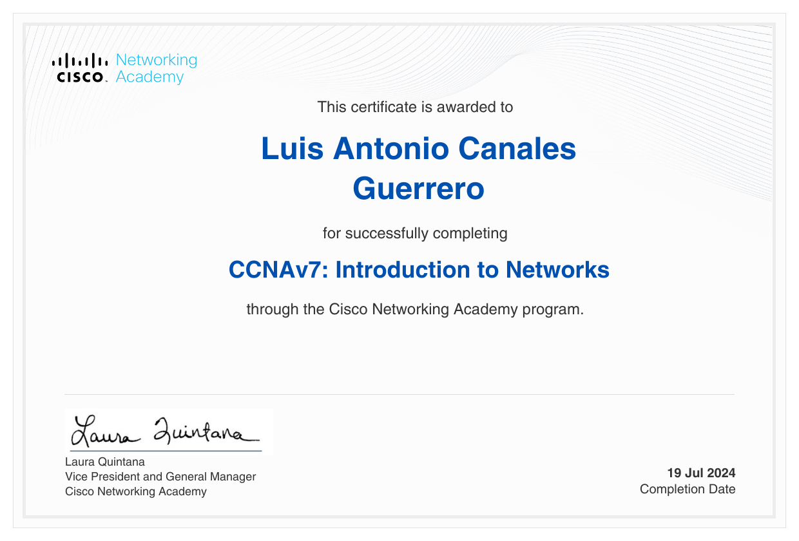
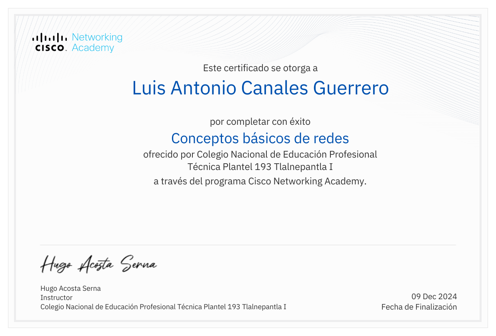
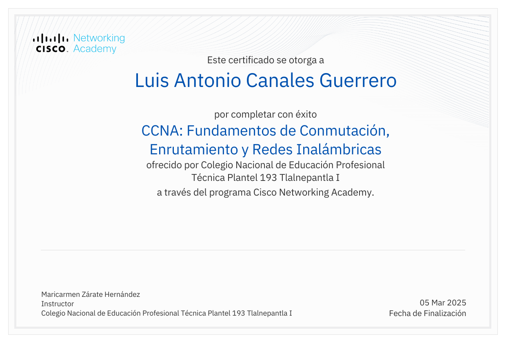
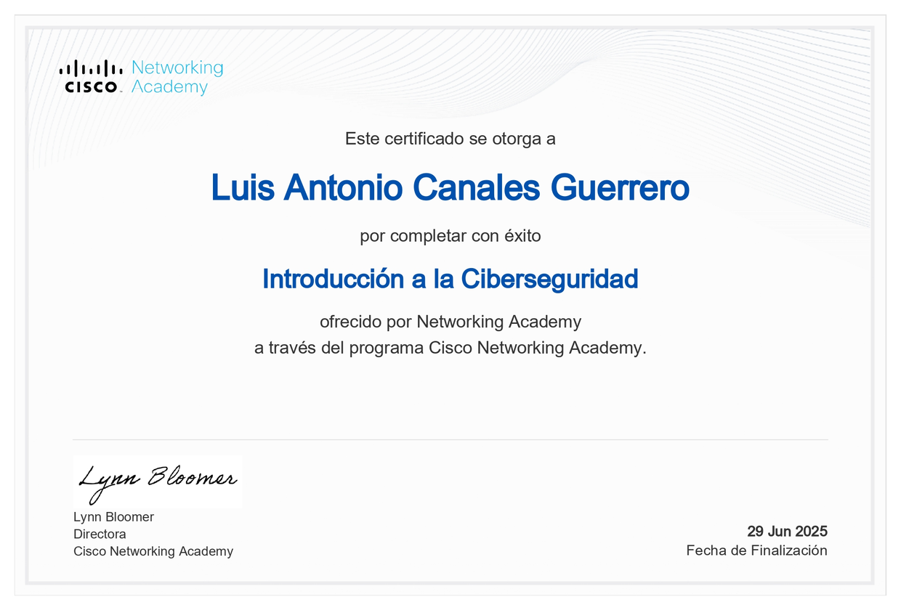
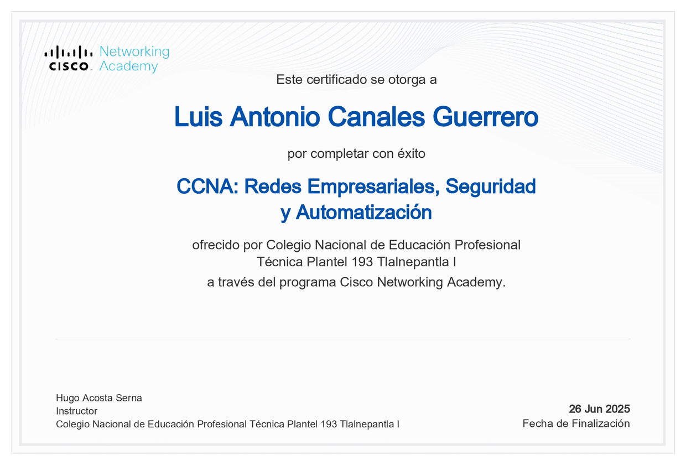
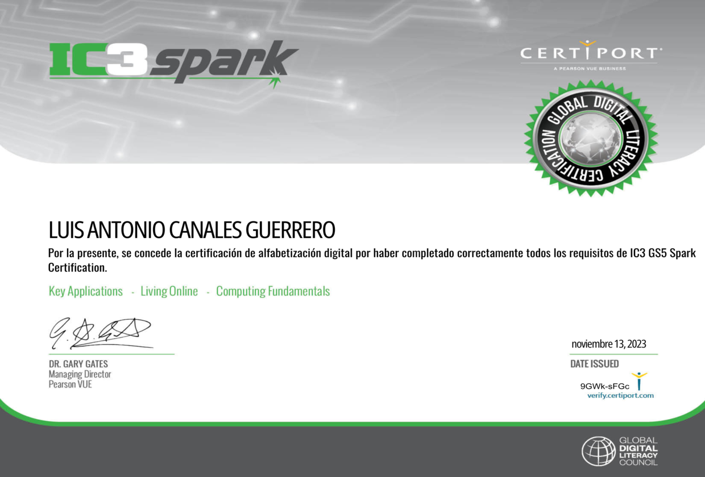
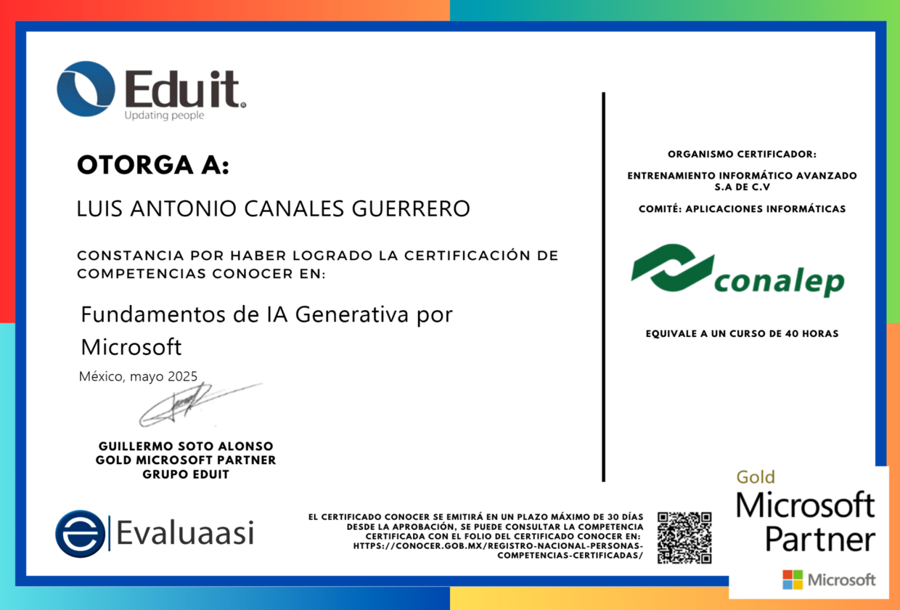
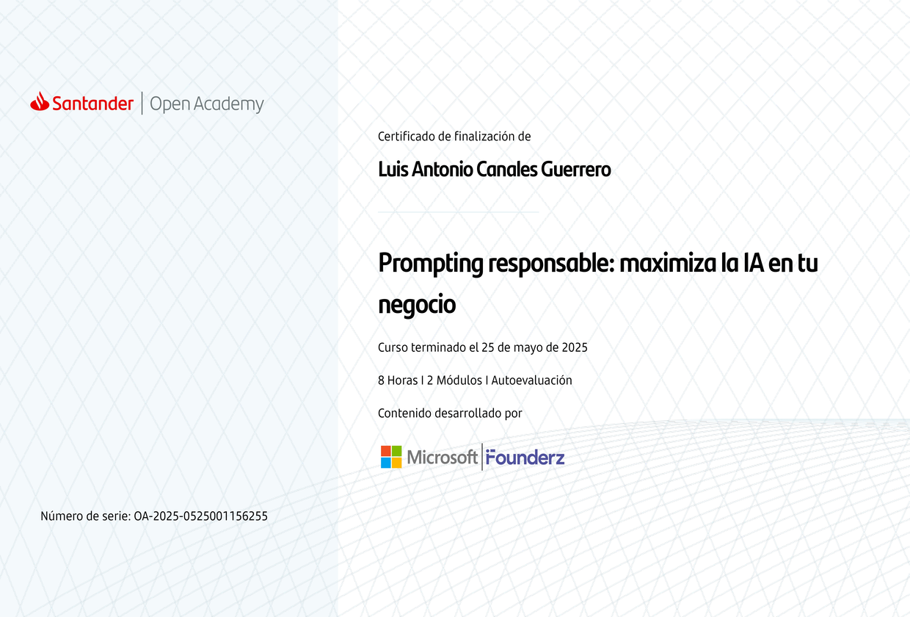
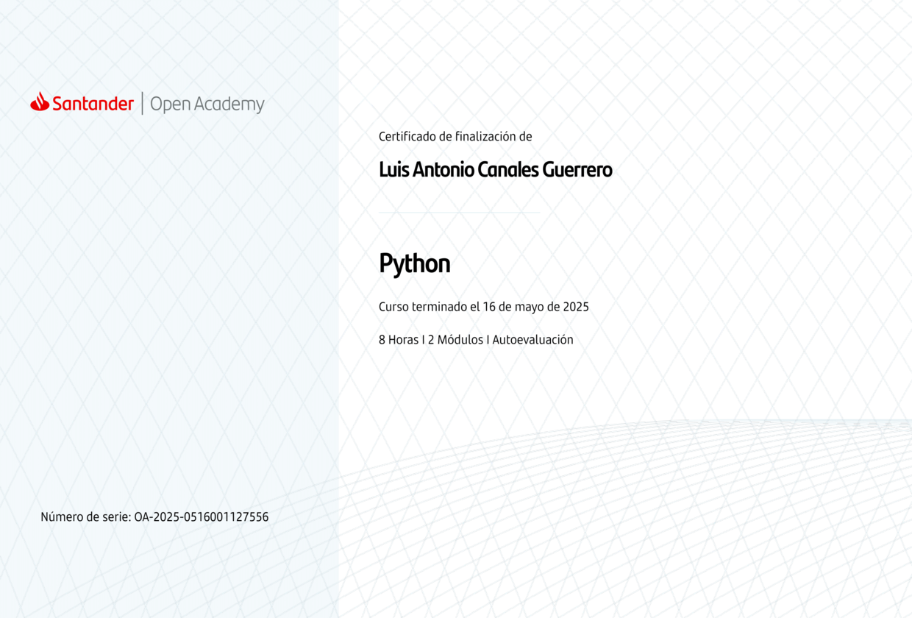

Sobre mí
Soy Luis Antonio Canales Guerrero, un desarrollador web profesional con formación en informática.
Mi experiencia incluye la creación de experiencias web innovadoras con un enfoque analítico y la capacidad de resolver problemas complejos.
Me especializo en redes de computadoras, programación Python, desarrollo web frontend y tecnologías de inteligencia artificial.
Mi pasión por la tecnología me impulsa a explorar constantemente nuevas tecnologías y construir soluciones innovadoras que generen valor real para los usuarios.
Mis habilidades técnicas
Redes y Certificaciones
- CCNA - Conceptos básicos de redes
- CCNA - Fundamentos de Conmutación
- CCNAv7 - Introduction to Networks
- Administración de redes
Desarrollo Web
- HTML5
- CSS3
- JavaScript
- Responsive Design
Programación y Bases de Datos
- Python
- JavaScript
- MySQL
- GitHub
- Visual Studio Code
Inteligencia Artificial
- Fundamentos de IA
- Prompting Responsable
- IA Generativa
- Machine Learning Básico
- Google Inteligencia Artificial
- Google Productividad
Habilidades de Informática
- Arquitectura de Computadoras
- Sistemas Operativos
- Mantenimiento de Hardware
- Instalación de Software
- Configuración de Sistemas
- Troubleshooting Técnico
- Seguridad Informática Básica
- Virtualización
Herramientas de Productividad
- Microsoft Word (Office 2019)
- Microsoft PowerPoint (Office 2019)
- IC3 Spark
- Inglés A2
Certificaciones Profesionales
Mi formación incluye certificaciones oficiales de instituciones reconocidas internacionalmente. Haz clic en las imágenes para ver los certificados completos:
Certificado CCNAv7 Introduction to Networks - Luis Antonio Canales Guerrero
Certificado CCNA Conceptos básicos de redes - Luis Antonio Canales Guerrero
Certificado CCNA Fundamentos de Conmutación - Luis Antonio Canales Guerrero
Certificado CCNA Introducción a la Ciberseguridad - Luis Antonio Canales Guerrero
Certificado CCNA Redes Empresariales, Seguridad - Luis Antonio Canales Guerrero
Certificado IC3 Spark - Luis Antonio Canales Guerrero
Certificado Fundamentos de IA - Luis Antonio Canales Guerrero
Certificado de IA Prompting Responsable - Luis Antonio Canales Guerrero
Certificado de Python - Luis Antonio Canales Guerrero
Información de contacto profesional
Correo electrónico:
luisantoniocg3005@outlook.comTeléfono:
+52 55 7479 7052GitHub:
luisantonio3005Proyectos y Recursos de Desarrollo
Explora mis proyectos de desarrollo web y recursos educativos organizados por tecnologías:
Desarrollo Frontend - CSS y HTML
Proyectos de diseño web y estilos CSS:
Programación - JavaScript
Proyectos de programación y lógica:
Presencia en Redes Sociales
Sígueme en mis redes sociales para contenido sobre tecnología, programación y desarrollo web: